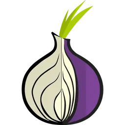
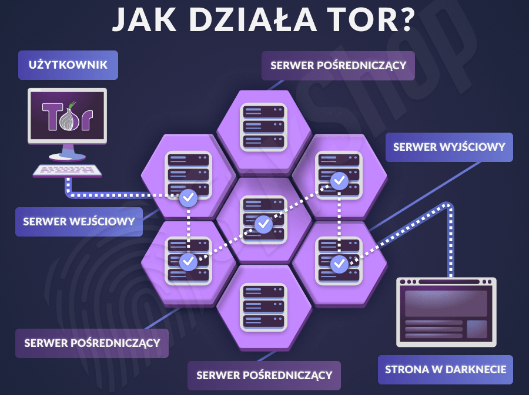

Dark Web
Dark Web to ukryta część Deep Webu, dostępna tylko za pomocą specjalnych narzędzi, takich jak przeglądarka Tor. Charakteryzuje się anonimowością użytkowników oraz stron, co pozwala na tworzenie zasobów nielegalnych, jak czarne rynki, czy fora wymiany informacji. Choć znajdują się tam również legalne treści, to Dark Web jest często kojarzony z działalnością przestępczą i nielegalnymi działaniami.
Jak się dostać?
1. Odpowiednia przeglądarka
Przeglądarką która umożliwia przeglądanie Deep/Dark Webu jest Tor
2. Użycie DOBREGO VPN
Aby zwiększyć bezpieczeństwo, ukryj swój adres IP za pomocą VPN, chroniąc swoją "prywatność"
3. Bezpieczne źródła
Kiedy już uda nam się dostać do "Ciemnej strony internetu" należy pamiętać o byciu ostrożnym i o nie klikaniu w linki, które wydają się podejrzane bądź nie wiemy gdzie nas zaprowadzą
4. Zachowanie należytej ostrożności
Nie angażuj się w nieznae transakcje i nie otwieraj podejrzanych plików
Czym jest i jak działa Tor 
Tor (The Onion Router) to oprogramowanie zapewniające anonimowe przeglądanie internetu, ukrywające tożsamość użytkownika przez przekierowywanie ruchu przez wiele serwerów. Powstało w 2002 roku jako projekt badawczy finansowany przez rząd USA i jest używane na całym świecie do ochrony prywatności.
Zasada działania
Tor działa poprzez przekierowywanie ruchu internetowego przez sieć serwerów, znanych jako węzły. Dane są szyfrowane warstwowo (jak cebula), a każda warstwa jest zdejmowana przez inny węzeł, co zapewnia anonimowość. Ruch przechodzi przez kilka losowo wybranych węzłów, a węzeł wyjściowy przekazuje dane do celu, nie znając tożsamości użytkownika. Dzięki temu Tor chroni prywatność, ukrywając lokalizację i identyfikację użytkownika.

Procedura wejścia
Po włączeniu przeglądarki Tor, łączymy sie z siecią i w zasadzie to tyle. Wystarczy wejść w jakikolwiek link .onion, jeżeli nie wiemy jak znaleźć takie linki to możemy posłużyć się na przykład hidden wiki lub innymi stronami z takimi linkami.
Jak widzimy wejście do deep/dark webu nie jest wcale trudne, jednak należy pamiętać o środkach ostrożności.